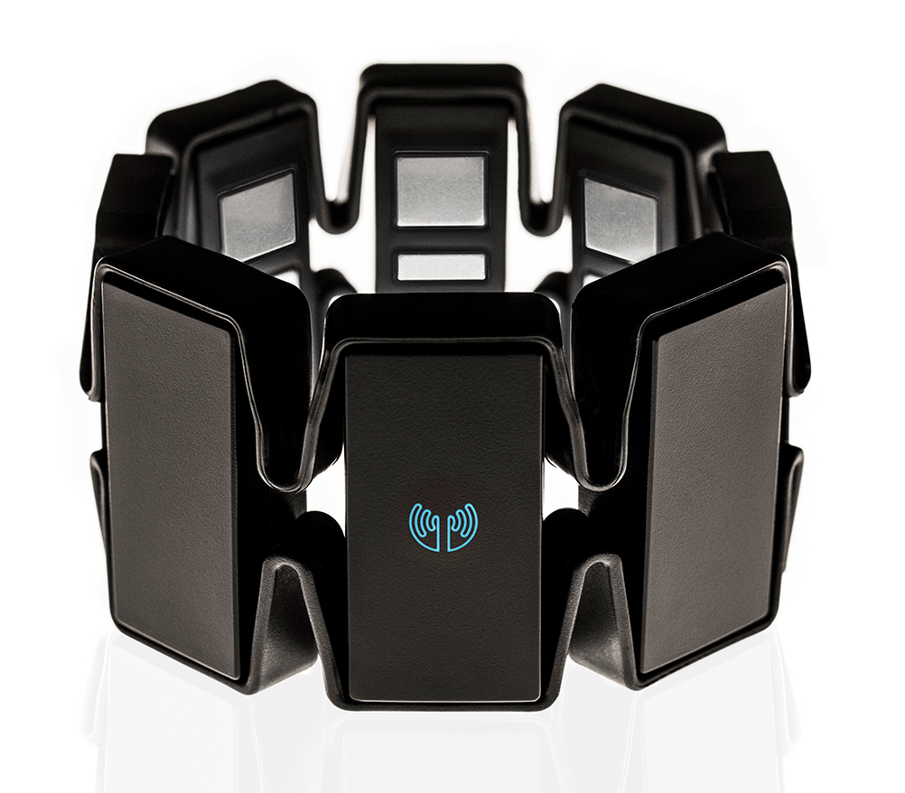

Desarrollo de prótesis robóticas mediante sistemas empotrados y tecnologías de impresión 3D
Jaume Gasa Gómez
jgg94@alu.ua.es
Índice
- Introducción
- Obtención de datos
- Clasificación de señales EMG
- Conclusiones
Introducción
Motivación
Ampliar mis conocimientos sobre
hardware y la inteligencia artificial.
Impacto social.
Prótesis Dextrus

Demo
Obtención de datos
Determinar qué señales EMG corresponden a qué posición del dedo.
Myo Armband y OpenCV

Captura de la posición del dedo
Funcionamiento del programa
Clasificación señales emg
Redes neuronales artificiales.
Modelo desarrollado.
Redes neuronales artificiales
Modelo desarrollado con Nolearn
def build_nn():
num_features = 8
num_classes = 6
layers = [
# 5 layers: 3 hidden layers
('input', InputLayer),
('dense0', DenseLayer),
('dropout0', DropoutLayer),
('dense1', DenseLayer),
('dropout1', DropoutLayer),
('dense2', DenseLayer),
('dropout2', DropoutLayer),
('output', DenseLayer)]
# layer parameters:
net = NeuralNet(layers=layers,
# Input
input_shape=(None, num_features),
# Dense0
dense0_nonlinearity=rectify,
dense0_num_units=1200,
dropout0_p=0.4,
# Dense1
dense1_nonlinearity=rectify,
dense1_num_units=1200,
dropout1_p=0.4,
# Dense2
dense2_num_units=1200,
dense2_nonlinearity=rectify,
dropout2_p=0.4,
# Output
output_num_units=num_classes,
output_nonlinearity=softmax,
update= nesterov_momentum,
update_learning_rate=0.001,
update_momentum=0.9,
train_split=TrainSplit(eval_size=0.1),
max_epochs=500)
Precisión durante el entrenamiento
Resultados
Informe de clasificación
| Precisión | Exhaustividad | Valor-F | |
|---|---|---|---|
| class 0 | 0.57 | 0.66 | 0.61 |
| class 1 | 0.80 | 0.64 | 0.71 |
| class 2 | 0.55 | 0.63 | 0.59 |
| class 3 | 0.61 | 0.54 | 0.58 |
| class 4 | 0.65 | 0.46 | 0.54 |
| class 5 | 0.55 | 0.73 | 0.63 |
| Promedio | 0.62 | 0.61 | 0.61 |
Matriz de confusión
Conclusiones
Ahondar en las fase de obtención de datos y el proceso de aprendizaje.
Desarrollo de prótesis robóticas mediante sistemas empotrados y tecnologías de impresión 3D
Jaume Gasa Gómez
jgg94@alu.ua.es